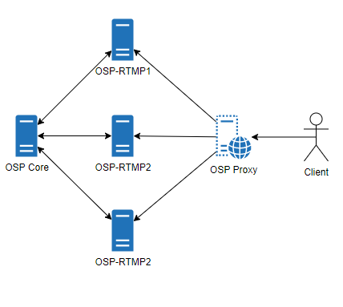

OSP-Proxy
Starting with v0.8.8, you can use OSP-Proxy to help with load balancing of live streams. OSP Proxy works in the opposite fashion of OSP Edge. Instead of receiving a RTMP push of all streams from an RTMP server, OSP Proxy fetches a copy of the HLS files from RTMP servers and caches them for viewing. In addition, OSP Proxy does not need to do additional transcoding if using Adaptive Streaming. This is in contrast to OSP Edge, which must perform transcoding when Adaptive Streaming is turned on.

Setting Up
OSP Proxy can be installed via the osp-config.sh script. It must be installed on its own separate server to prevent conflicting with any other OSP service. The Proxy service requires configuration to reach the OSP-Core’s API. This allows the Proxy to determine which RTMP source a stream is coming from and adjust accordingly. This is set in the proxy’s config.py file located at /opt/osp-proxy/conf/config.py
# OSP Core API Site ex:http://osp.example.com
ospCoreAPI = "#CHANGEMETOOSPCORE"
In addition, OSP-Proxy has the ability to work with existing OSP-Edge Systems or other OSP-Proxy installs. The Proxy can be forced to pull from a specific server using the forceDestination option in the config.py file
# Force Destination - Use to point to Specified Edge Server or Tiered Proxy. Uncomment to override API's RTMP List and use the destination you list
#forceDestination = "example.com"
#forceDestinationType = "edge" # Choices are "edge", "proxy"
Finally, RTMP Servers must be configured to allow the proxy to access the HLS files. Each OSP-RTMP server will need to have the following files edited and the nginx-osp service restarted:
/usr/local/nginx/conf/custom/osp-rtmp-custom-authorizeproxy.conf
add an
allow <ip>;line for each proxy in use
allow <ip of proxy>;
deny all;
/usr/local/nginx/conf/custom/osp-rtmp-custom-server.conf
If using TLS for your primary server, comment
listen 5999 default_server;and uncomment the SSL/TLS lines
#listen 5999 default_server;
### Comment Above and Uncomment/Edit Below for OSP-Proxy TLS ###
listen 5999 ssl http2 default_server;
ssl_certificate /etc/letsencrypt/live/osp.example.com/fullchain.pem;
ssl_certificate_key /etc/letsencrypt/live/osp.example.com/privkey.pem;
ssl_protocols TLSv1.2 TLSv1.3;
Restart the nginx-osp service
sudo systemctl restart nginx-osp
Finally, add the FQDN of the OSP Proxy to the Admin/Settings Screen on the main OSP site. OSP will automatically redirect all Video Stream requests to the Proxy, which will redirect and cache based on active RTMP servers and where streams are being sent to.
Additional Notes
Multiple OSP Proxy services can be used, but will require a reverse proxy/HAProxy in front of them.
OSP Proxies will not require significant storage (15 Gigs are set aside for caching) or any shared storage mounting
OSP Proxy will automatically rebuild its needed Nginx Mappings every 5 minutes. If you add another RTMP server and need to test immediately, you can manually run the updateUpstream.sh script
sudo bash /opt/osp-proxy/updateUpstream.sh